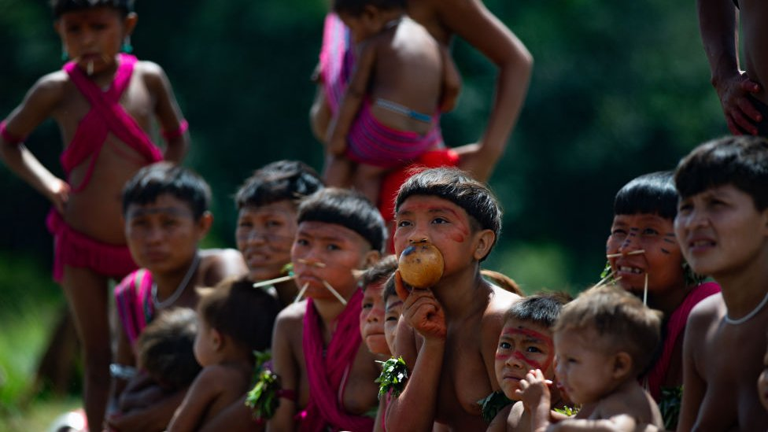

Reahu
The main Yanomami ritual is the ceremony of the dead, called reahu.
To contact the spirits of their loved ones, members of the tribe inhale a hallucinogenic powder called paricá. In the body, the component extracted from tree bark leaves indigenous people in a state of trance. In this way, they believe, they open space to incorporate the spirits of those who have passed away.